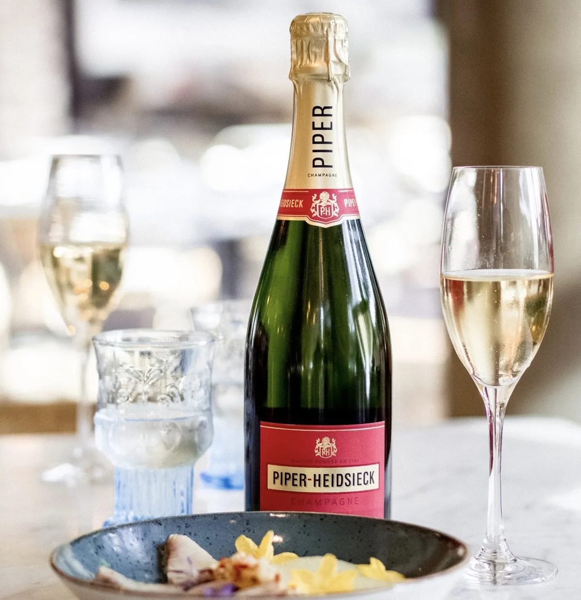
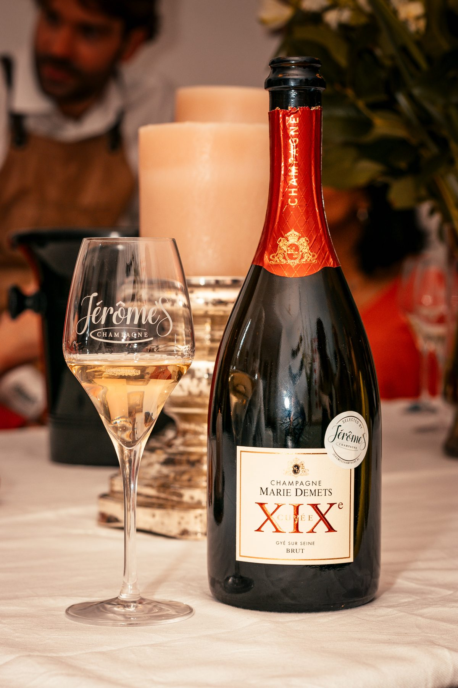

파이퍼 하이직 & 마리 드메 샴페인 특별 세트
특별한 날을 위한 샴페인을 찾고 계신가요?
세계적인 샴페인 하우스와 부티크 샴페인의 완벽한 만남
특별한 날을 위한 샴페인을 찾고 계신가요?
이번에 땡큐와인에서 서로 다른 매력을 가진 두 병의 샴페인을 하나의 세트로 준비했습니다.
세계적으로 가장 사랑받는 샴페인 하우스 파이퍼 하이직 뀌베 브뤼, 그리고 소량 생산 부티크 샴페인 마리 드메 뀌베 19세기 시에클.
대중성과 개성을 모두 경험할 수 있는 구성으로, 선물용은 물론 홈파티나 기념일에도 자신 있게 추천드립니다.

🥂 파이퍼 하이직 뀌베 브뤼
240년의 역사, '여왕을 위한 샴페인'에서 시작되다
파이퍼 하이직(Piper-Heidsieck)은 1785년 플로렌스 루이 하이직(Florens Louis Heidsieck)이 '세상에서 가장 훌륭한 샴페인을 만들어 왕비에게 바치겠다'는 꿈으로 시작한 샴페인 하우스입니다.
그의 샴페인은 실제로 프랑스 왕실에서 큰 사랑을 받았고, 이후 유럽 귀족 사회에서도 명성을 얻으며 세계적인 샴페인 브랜드로 성장했습니다.
1837년 사업가 앙리 귀욤 파이퍼(Henri-Guillaume Piper)가 경영을 맡으며 현재의 Piper-Heidsieck이라는 이름이 탄생했고, 지금까지 240년에 가까운 역사를 이어오고 있습니다.
오늘날에는 프랑스 럭셔리 그룹 EPI(Group Européenne de Participations)의 대표 샴페인 브랜드로 자리 잡으며 전 세계 100여 개국에서 사랑받고 있습니다.

Tasting Note
잘 익은 사과와 배
시트러스의 상큼함
브리오슈와 구운 빵의 고소한 풍미
균형감 있는 산도와 깔끔한 피니시
첫 잔부터 누구나 편안하게 즐길 수 있는 스타일로, 샴페인의 기본기를 가장 잘 보여주는 와인입니다.
✔ 식전주
✔ 해산물
✔ 튀김류
✔ 치즈 플래터
어떤 음식과도 뛰어난 궁합을 보여주는 만능 샴페인입니다.
샴페인을 예술 작품으로 만든 브랜드
파이퍼 하이직은 단순히 좋은 샴페인을 만드는 것을 넘어, 샴페인과 예술, 패션을 결합한 최초의 브랜드 중 하나입니다.
특별한 빈티지가 출시될 때마다 세계적인 디자이너와 협업해 한정판 병을 제작하며 샴페인 업계의 새로운 문화를 만들어 왔습니다.
대표적인 컬래버레이션으로는
러시아 황실의 보석을 제작했던 칼 파베르제(Carl Fabergé)가 디자인한 Rare 1885
세계적인 주얼리 브랜드 반 클리프 앤 아펠(Van Cleef & Arpels)이 제작한 Rare 1985
프랑스 명품 메종 아르튀스 베르트랑(Arthus Bertrand)이 디자인한 Rare 2002
세계적인 패션 디자이너 장 폴 고티에(Jean-Paul Gaultier)가 디자인한 리미티드 에디션
레드솔 하이힐로 유명한 크리스찬 루부탱(Christian Louboutin)과 협업한 스페셜 에디션
등이 있으며, 이러한 프로젝트들은 지금도 컬렉터들에게 높은 가치를 인정받고 있습니다.
마릴린 먼로가 사랑한 샴페인
파이퍼 하이직을 이야기할 때 빠질 수 없는 일화가 있습니다.
할리우드의 전설적인 배우 마릴린 먼로는 인터뷰에서 이렇게 말했습니다.
"나는 샤넬 No.5를 입고 잠이 들고, 파이퍼 하이직 한 잔으로 아침을 시작해요."
이 한마디는 파이퍼 하이직을 전 세계적으로 더욱 유명하게 만들었고, 지금도 브랜드를 대표하는 가장 상징적인 에피소드로 남아 있습니다.
칸 영화제가 선택한 샴페인
1993년부터 파이퍼 하이직은 칸 국제영화제(Cannes Film Festival)의 공식 샴페인으로 선정되어 수많은 배우와 감독, 영화인들의 축하 순간을 함께해 왔습니다.
레드카펫과 애프터파티에서 가장 많이 만날 수 있는 샴페인 중 하나로 자리 잡았으며, 세계적인 영화제와 다양한 문화 행사를 후원하며 럭셔리 샴페인의 이미지를 더욱 공고히 하고 있습니다.
왜 파이퍼 하이직은 입문자부터 애호가까지 모두에게 사랑받을까?
파이퍼 하이직 뀌베 브뤼는 피노 누아를 중심으로 피노 뮈니에와 샤르도네를 블렌딩해 풍부한 과실감과 산뜻한 산도의 균형을 완성합니다.
첫 모금에서는 잘 익은 사과와 배, 시트러스의 싱그러움이 느껴지고, 이어서 브리오슈와 구운 빵, 은은한 견과류 풍미가 더해집니다. 기분 좋은 크리미한 버블과 긴 여운은 샴페인다운 품격을 느끼게 해줍니다.
복잡하면서도 부담스럽지 않은 스타일 덕분에 샴페인을 처음 접하는 분도 쉽게 즐길 수 있고, 오랫동안 와인을 즐겨온 애호가들도 만족할 만큼 완성도가 뛰어난 샴페인입니다.
🍾 샹파뉴의 숨은 보석, 마리 드메 뀌베 19세기 시에클
샴페인을 조금이라도 좋아하는 분이라면 한 번쯤 이런 생각을 해보셨을 겁니다.
"유명한 브랜드 말고, 정말 현지에서 인정받는 생산자의 샴페인은 없을까?"
마리 드메(Marie Demets)는 바로 그런 분들을 위한 샴페인입니다.
대형 샴페인 하우스처럼 수백만 병을 생산하는 브랜드가 아니라, 프랑스 샹파뉴 남부 코트 데 바(Côte des Bar)에서 가족이 직접 포도를 재배하고 양조하는 레콜탕 마니퓔랑(Récoltant-Manipulant, RM) 생산자입니다.
즉, 남의 포도를 사 와 만드는 것이 아니라 자신의 포도밭에서 수확한 포도로 직접 샴페인을 만드는 생산자라는 의미입니다.
최근 전 세계 와인 애호가들이 RM 샴페인을 찾는 이유도 바로 여기에 있습니다.

Tasting Note
흰 꽃 향
잘 익은 복숭아와 배
헤이즐넛과 브리오슈
크리미한 버블
길고 우아한 피니시
잔을 비울수록 다양한 향이 펼쳐지는 타입이라 천천히 즐기기 좋은 샴페인입니다.
✔ 기념일
✔ 코스요리
✔ 특별한 저녁 식사
✔ 와인을 좋아하는 분께 선물
특히 와인을 어느 정도 즐기는 분들이라면 더욱 만족하실 스타일입니다.
대형 브랜드가 흉내 낼 수 없는 '테루아의 개성'
코트 데 바는 샹파뉴 지역에서도 부르고뉴와 가까운 남쪽에 위치한 산지로, 피노 누아가 특히 뛰어난 품질을 보여주는 지역입니다.
석회질과 점토가 어우러진 토양은 포도에 풍부한 과실 향과 깊은 미네랄을 부여하며, 같은 샴페인이라도 보다 풍성하고 입체적인 스타일을 만들어 냅니다.
마리 드메는 이러한 지역의 개성을 최대한 살리기 위해 대량 생산보다 품질을 우선하며, 한 병 한 병 정성스럽게 양조합니다.
그래서 잔을 비울수록 새로운 향이 피어오르고, 시간이 지날수록 더욱 아름다운 모습을 보여주는 샴페인으로 평가받습니다.
이름에 담긴 의미, '19세기 시에클'
이 샴페인의 이름인 "XIXe Siècle(19세기)"는 단순한 제품명이 아닙니다.
샹파뉴가 세계 최고의 스파클링 와인으로 자리 잡으며 황금기를 맞이했던 19세기의 전통과 정신을 현대적으로 재해석하겠다는 생산자의 철학이 담겨 있습니다.
화려한 장식보다 와인 자체의 완성도를 중요하게 생각하는 마리 드메의 스타일을 가장 잘 보여주는 큐베이기도 합니다.
섬세함과 깊이를 동시에 담은 한 잔
잔에 따르면 곱고 섬세한 버블이 천천히 올라오고,
흰 꽃과 잘 익은 배, 복숭아의 향이 먼저 피어납니다.
시간이 지나면서 브리오슈와 헤이즐넛, 은은한 토스트 향이 더해지고, 입안에서는 크리미한 질감과 긴 여운이 이어집니다.
화려하게 강렬하기보다는 우아하고 균형 잡힌 스타일이라 음식과 함께 마셨을 때 더욱 진가를 발휘합니다.
특히 천천히 대화를 나누며 즐기는 저녁 식사나 기념일에 잘 어울리는 샴페인입니다.
왜 와인 애호가들은 RM 샴페인을 찾을까?
최근 샴페인 시장에서는 유명 브랜드 못지않게 RM(레콜탕 마니퓔랑) 샴페인의 인기가 빠르게 높아지고 있습니다.
생산량은 적지만 포도밭의 개성과 생산자의 철학이 그대로 담겨 있어, 매년 조금씩 다른 빈티지의 매력을 즐길 수 있기 때문입니다.
마리 드메 역시 이러한 RM 샴페인의 매력을 잘 보여주는 생산자로, 화려한 마케팅보다 와인의 품질 자체로 인정받아 온 숨은 명가라고 할 수 있습니다.
두 병을 함께 추천하는 이유
이번 세트는 서로 경쟁하는 두 샴페인이 아닙니다.
240년 전통을 자랑하는 세계적인 샴페인 하우스 '파이퍼 하이직'과,
생산자의 철학과 테루아를 고스란히 담아낸 부티크 RM 샴페인 '마리 드메'.
한 병은 세계적인 명성을, 다른 한 병은 샹파뉴 현지의 진짜 매력을 보여줍니다.
그래서 이 세트는 단순히 샴페인 두 병을 함께 판매하는 것이 아니라, 샴페인의 두 가지 세계를 한 번에 경험할 수 있는 특별한 구성이라고 자신 있게 추천드립니다.
이런 분들께 추천합니다
🥂 특별한 기념일을 준비하는 분
🎁 센스 있는 선물을 찾는 분
🍾 좋은 샴페인을 합리적인 가격에 구매하고 싶은 분
🍽️ 홈파티나 모임을 준비하는 분
🍷 서로 다른 스타일의 샴페인을 비교하며 즐기고 싶은 분
땡큐와인 특별 세트
이번 세트는 파이퍼 하이직 뀌베 브뤼 + 마리 드메 뀌베 19세기 시에클 두 병으로 구성된 한정 특가 상품입니다.
행사 가격은 땡큐와인 멤버십 회원에게 카카오톡으로 개별 안내드립니다.
아직 멤버십에 가입하지 않으셨다면 지금 가입하시고 특별한 혜택과 함께 이번 샴페인 특가도 받아보세요.
특별한 날을 더욱 특별하게 만들어 줄 두 병의 샴페인.
세계적인 샴페인 하우스와 부티크 샴페인의 매력을 한 번에 경험해 보시기 바랍니다. 🥂🍾
이 글은 땡큐와인 네이버 블로그에 먼저 올린 글이에요.